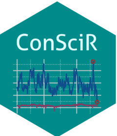
Humidity functions
Source:vignettes/articles/Humidity-functions.Rmd
Humidity-functions.RmdThis study examines and summarises the relationships between humidity functions, which are important for calculations used by engineers and scientists, for example to understand air conditioning systems. These functions may play a key role in developing more energy-efficient systems. Understanding the stability of these functions is shown, as they underpin many methodologies in this field.
A grid of temperature and relative humidity values, ranging from -50°C to 100°C and 0% to 100% RH respectively, was used to test the functions. Contour plots were utilised to visualise the interactions between derived variables across the temperature-humidity grid. The analysis includes validation checks for temperature and relative humidity calculations, to identify potential errors.
The humidity functions assume atmospheric pressure.
TRHgrid: Dataset used to visualise the functions
A grid of temperature and relative humidity values is used to analysis the relationship between derived variables. A grid of temperature and humidity between -50 to 100°C and 0 to 100%RH with 0.25°C and 1%RH spacing. The expand.grid() function creates a complete factorial combination of all temperature and relative humidity values, where each unique temperature-humidity pair is represented..
Temp <- seq(-50, 100, 0.25)
RH <- seq(0, 100, 1)
TRHgrid <-
expand.grid(Temp, RH) |>
tibble() |>
rename(Temp = Var1, RH = Var2)
summary(TRHgrid)
#> Temp RH
#> Min. :-50.0 Min. : 0
#> 1st Qu.:-12.5 1st Qu.: 25
#> Median : 25.0 Median : 50
#> Mean : 25.0 Mean : 50
#> 3rd Qu.: 62.5 3rd Qu.: 75
#> Max. :100.0 Max. :100
head(TRHgrid, 3)
#> # A tibble: 3 × 2
#> Temp RH
#> <dbl> <dbl>
#> 1 -50 0
#> 2 -49.8 0
#> 3 -49.5 0
tail(TRHgrid, 3)
#> # A tibble: 3 × 2
#> Temp RH
#> <dbl> <dbl>
#> 1 99.5 100
#> 2 99.8 100
#> 3 100 100Examples of use of the functions
Starting with input data of temperature and relative humidity, a wide range of derived variables can be computed. These include absolute humidity, dew point temperature, mixing ratio, enthalpy, water vapor saturation pressure, and actual water vapor pressure.
# Functions applied on the mydata dataset
mydata |>
mutate(
Abs = calcAH(Temp, RH),
DewPoint = calcDP(Temp, RH),
MR = calcMR(Temp, RH),
Enthalpy = calcEnthalpy(Temp, RH),
Pws = calcPws(Temp),
Pw = calcPw(Temp, RH),
Temp_calc = calcTemp(RH, DewPoint),
RH_AH_calc = calcRH(Temp, Abs),
RH_DP_calc = calcRH_DP(Temp, DewPoint)
) |>
head() |>
glimpse()
#> Rows: 6
#> Columns: 14
#> $ Site <chr> "London", "London", "London", "London", "London", "London"
#> $ Sensor <chr> "Room 1", "Room 1", "Room 1", "Room 1", "Room 1", "Room 1"
#> $ Date <dttm> 2024-01-01 00:00:00, 2024-01-01 00:15:00, 2024-01-01 00:29:…
#> $ Temp <dbl> 21.8, 21.8, 21.8, 21.7, 21.7, 21.7
#> $ RH <dbl> 36.8, 36.7, 36.6, 36.6, 36.5, 36.2
#> $ Abs <dbl> 7.052415, 7.033251, 7.014087, 6.973723, 6.954670, 6.897508
#> $ DewPoint <dbl> 6.383970, 6.344456, 6.304848, 6.216205, 6.176529, 6.056922
#> $ MR <dbl> 5.959289, 5.942941, 5.926593, 5.890138, 5.873893, 5.825162
#> $ Enthalpy <dbl> 37.16176, 37.12021, 37.07867, 36.88392, 36.84264, 36.71881
#> $ Pws <dbl> 26.13122, 26.13122, 26.13122, 25.97199, 25.97199, 25.97199
#> $ Pw <dbl> 9.616288, 9.590156, 9.564025, 9.505748, 9.479776, 9.401860
#> $ Temp_calc <dbl> 21.8, 21.8, 21.8, 21.7, 21.7, 21.7
#> $ RH_AH_calc <dbl> 36.8, 36.7, 36.6, 36.6, 36.5, 36.2
#> $ RH_DP_calc <dbl> 36.8, 36.7, 36.6, 36.6, 36.5, 36.2Using the relationship between temperature, absolute humidity and dew point can be used to adjust the relative humidity. The functions can be used in combination to determine the adjustments needed to reach a target relative humidity. This approach assumes constant pressure, which is typical for most indoor situations.
Adjustment Methods:
-
- Changing Absolute Humidity:
- Increasing absolute humidity at a constant temperature will increase RH.
- Decreasing absolute humidity at a constant temperature will decrease RH.
-
- Changing Temperature:
- Decreasing temperature at constant absolute humidity will increase RH.
- Increasing temperature at constant absolute humidity will decrease RH.
-
- Using Dew Point:
- The difference between air temperature and dew point indicates how close the air is to saturation.
- Adjusting temperature closer to the dew point increases RH, while moving it away decreases RH.
# Changing Absolute Humidity
mydata |>
mutate(
# Absolute humidity, AH
AH = calcAH(Temp, RH),
# Dew point, DP
DP = calcDP(Temp, RH),
# Target RH
tRH = 50,
# AH*: AHstar new absolute humidity for target relative humidity, using tRH
AHstar = calcAH(Temp, tRH),
# Difference in measured AH and AH*
dAH = AHstar - AH,
# Check
AHcheck = AHstar - (AH + dAH),
# RH*: RH star - the new RH using AH* and measured temperature
RHstarAH = calcRH(Temp, AHstar),
# Difference from target
RHerrorAH = RHstarAH - tRH,
) |>
ggplot() +
geom_line(aes(Date, Temp), col = "red", alpha = 0.5) +
geom_line(aes(Date, RH), col = "blue", alpha = 0.5) +
geom_line(aes(Date, AH), col = "green", alpha = 0.5) +
geom_line(aes(Date, RHstarAH), col = "darkblue") +
geom_line(aes(Date, AHstar), col = "darkgreen") +
geom_line(aes(Date, RHerrorAH)) +
labs(title = "Using absolute humidity to adjust relative humidity",
subtitle = "Measure absolute humidity (light green), new absolute humidity (dark green),
resultant relative humidity (dark blue)") +
theme_bw()
# Changing Temperature
mydata |>
mutate(
# Absolute humidity, AH
AH = calcAH(Temp, RH),
# Dew point, DP
DP = calcDP(Temp, RH),
# Target RH
tRH = 50,
# T*: Tstar new temperature at target RH using dew point
Tstar = calcTemp(tRH, DP),
# Difference in measure temperature and new temperature
dTemp = Tstar - Temp,
# Check
Tcheck = Tstar - (Temp + dTemp),
# RHstarT: New humidity with new temperature
RHstarT = calcRH_DP(Tstar, DP),
# Error
RHerrorT = RHstarT - tRH
) |>
ggplot() +
geom_line(aes(Date, Temp), col = "red", alpha = 0.5) +
geom_line(aes(Date, RH), col = "blue", alpha = 0.5) +
geom_line(aes(Date, Tstar), col = "darkred") +
geom_line(aes(Date, RHstarT), col = "darkblue") +
geom_line(aes(Date, RHerrorT)) +
labs(title = "Using temperature to adjust relative humidity") +
theme_bw()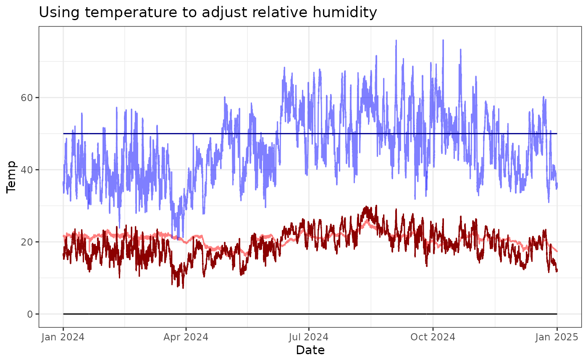
# Using Dew Point
mydata |>
mutate(
# Absolute humidity, AH
AH = calcAH(Temp, RH),
# Dew point, DP
DP = calcDP(Temp, RH),
# Target RH
tRH = 50,
# DP*: DPstarAH new dew point at target RH using absolute humidity
DPstarAH = calcDP(Temp, tRH),
# RH*: New relative humidity at new dew point
RHstarDP = calcRH_DP(Temp, DPstarAH),
# Error
RHerrorDP = RHstarDP - tRH
) |>
ggplot() +
geom_line(aes(Date, Temp), col = "red", alpha = 0.5) +
geom_line(aes(Date, RH), col = "blue", alpha = 0.5) +
geom_line(aes(Date, DP), col = "hotpink") +
geom_line(aes(Date, DPstarAH), col = "purple") +
geom_line(aes(Date, RHstarDP), col = "darkblue") +
geom_line(aes(Date, RHerrorDP)) +
labs(title = "Using dew point to adjust relative humidity") +
theme_bw()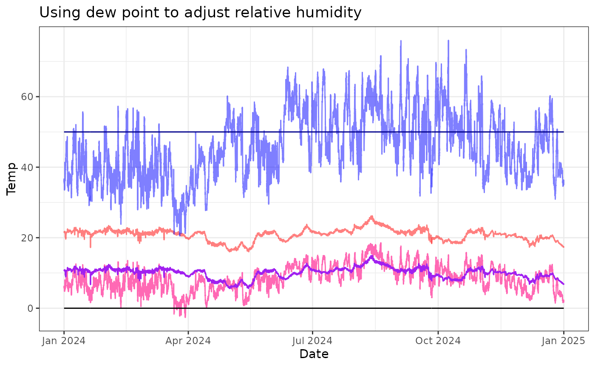
Temperature calcTemp
The temperature calculations are explored to determine the accuracy of temperature derivation using dew point and relative humidity. Visualisation of the temperature calculation against the original temperature and relative humidity. The temperature calculation is presented as a filled contour plot of the calculated temperature using calcTemp through dew point which is calculated using calcDP.
head(mydata) |> dplyr::mutate(DewPoint = calcDP(Temp, RH), Temp2 = calcTemp(RH, DewPoint))
#> # A tibble: 6 × 7
#> Site Sensor Date Temp RH DewPoint Temp2
#> <chr> <chr> <dttm> <dbl> <dbl> <dbl> <dbl>
#> 1 London Room 1 2024-01-01 00:00:00 21.8 36.8 6.38 21.8
#> 2 London Room 1 2024-01-01 00:15:00 21.8 36.7 6.34 21.8
#> 3 London Room 1 2024-01-01 00:29:59 21.8 36.6 6.30 21.8
#> 4 London Room 1 2024-01-01 00:44:59 21.7 36.6 6.22 21.7
#> 5 London Room 1 2024-01-01 00:59:59 21.7 36.5 6.18 21.7
#> 6 London Room 1 2024-01-01 01:14:59 21.7 36.2 6.06 21.7
TRHgrid |>
mutate(
DewPoint = calcDP(Temp, RH),
TempCalc = calcTemp(RH, DewPoint)
) |>
ggplot(aes(Temp, RH, z = TempCalc)) +
geom_contour_filled(bins = 20, breaks = seq(-50, 100, 10)) +
labs(title = "Calculated temperature vs actual",
subtitle = "calcDP(Temp, RH) > DewPoint > TempCalc") +
theme_minimal()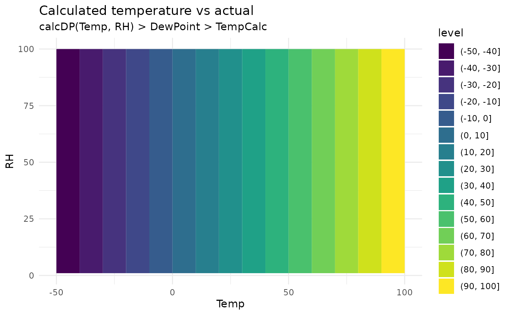
Visualisation of the temperature calculation against the original temperature and relative humidity. The plot aims to validate the accuracy and consistency of temperature calculations based on relative humidity and dew point.
TRHgrid |>
mutate(
DewPoint = calcDP(Temp, RH),
TempCalc = calcTemp(RH, DewPoint),
Temp_error = TempCalc - Temp
) |>
ggplot(aes(Temp, RH, z = Temp_error)) +
geom_contour_filled(bins = 20) +
labs(title = "Difference between calculated temperature vs actual",
subtitle = "calcDP(Temp, RH) > DewPoint > TempCalc - Temp (original)") +
theme_minimal()
Relative Humidity calcRH and
calcRH_DP
This section investigates relative humidity calculations using derivations from dew point and absolute humidity. Contour plots demonstrate the relationships between calculated and original relative humidity values and the errors.
TRHgrid |>
mutate(
DewPoint = calcDP(Temp, RH),
RH_DPcalc = calcRH_DP(Temp, DewPoint)
) |>
ggplot(aes(Temp, RH, z = RH_DPcalc)) +
geom_contour_filled(bins = 20, breaks = seq(0, 100, 5)) +
labs(title = "Calculated humidity via dew point vs actual",
subtitle = "calcDP(Temp, RH) > DewPoint > RHcalc") +
theme_minimal()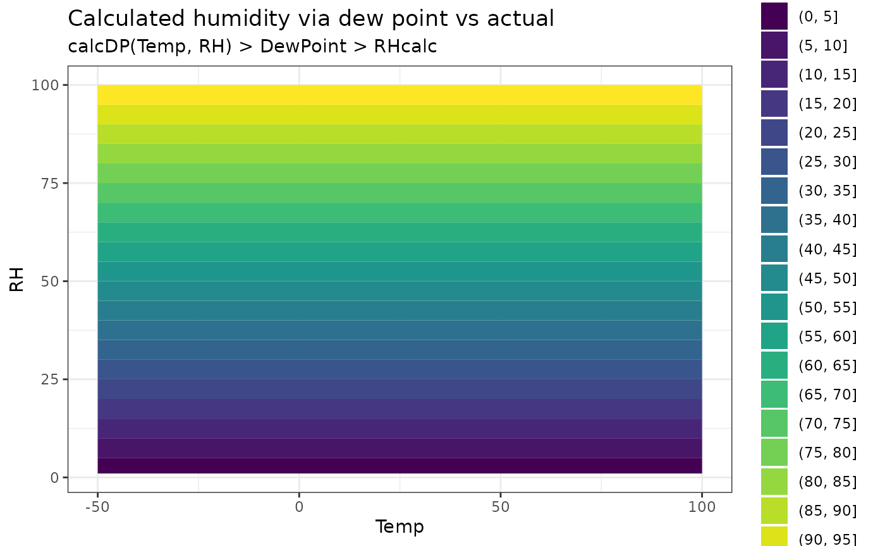
TRHgrid |>
mutate(
DewPoint = calcDP(Temp, RH),
RH_DPcalc = calcRH_DP(Temp, DewPoint),
RH_DP_error = RH_DPcalc - RH
) |>
ggplot(aes(Temp, RH, z = RH_DP_error)) +
labs(title = "Calculated humidity vs actual",
subtitle = "calcDP(Temp, RH) > DewPoint > RHcalc - RH (original)") +
geom_contour_filled(bins = 20) +
theme_minimal()
TRHgrid |>
mutate(RH_AHcalc = calcRH(Temp, calcAH(Temp, RH))) |>
ggplot(aes(Temp, RH, z = RH_AHcalc)) +
geom_contour_filled(bins = 20, breaks = seq(0, 100, 5)) +
labs(title = "Calculated humidity via absolute humidity vs actual",
subtitle = "calcAH(Temp, RH) > Absolute humidity > RHcalc - RH (original)") +
theme_minimal()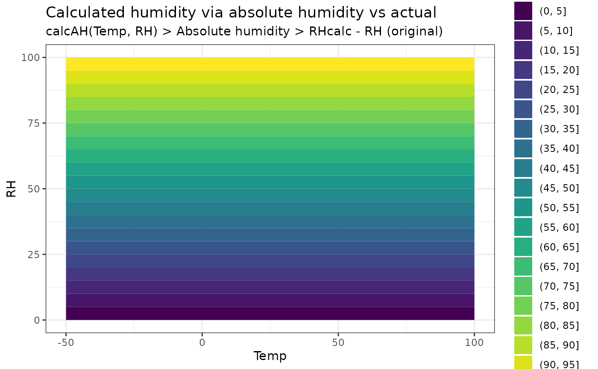
TRHgrid |>
mutate(RH_AH_error = calcRH(Temp, calcAH(Temp, RH)) - RH) |>
ggplot(aes(Temp, RH, z = RH_AH_error)) +
labs(title = "Calculated humidity via absolute humidity vs actual",
subtitle = "calcAH(Temp, RH) > Absolute humidity > RHcalc - RH (original)") +
geom_contour_filled(bins = 20) +
theme_minimal()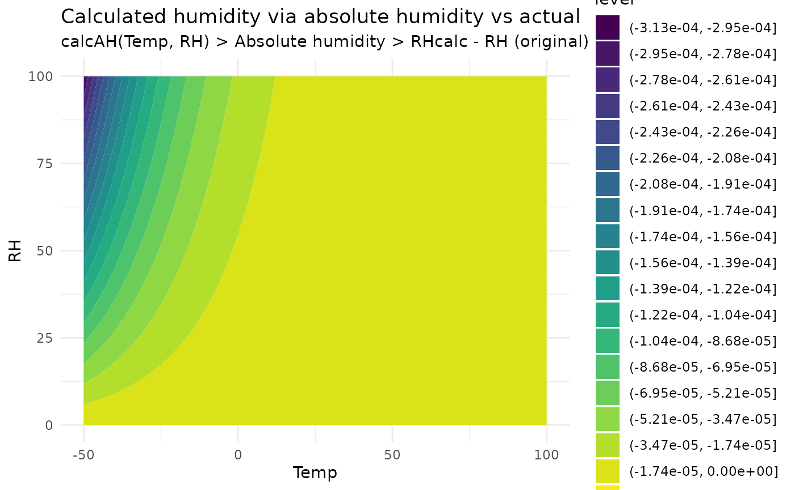
Using absolute humidity generates errors at low temperatures and high
relative humidities that may become significant or exponentiate if used
in machine learning applications. It is recommended to be wary when
using the calcAH function at low temperature and high
relative humidity.
Absolute humidity calcAH
TRHgrid |>
mutate(AH = calcAH(Temp, RH)) |>
ggplot(aes(Temp, RH, z = AH)) +
geom_contour_filled(bins = 20) +
theme_minimal()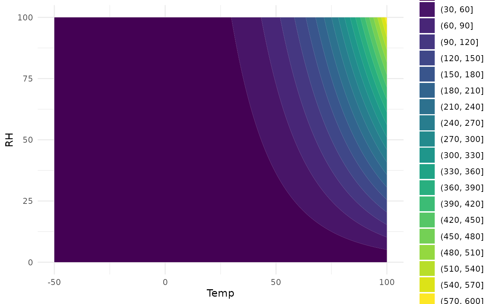
Dew Point calcDP
The dew point analysis shows how the dew point temperature varies with changing temperature and relative humidity.
TRHgrid |>
mutate(DP = calcDP(Temp, RH)) |>
ggplot(aes(Temp, RH, z = DP)) +
geom_contour_filled(bins = 20) +
theme_minimal()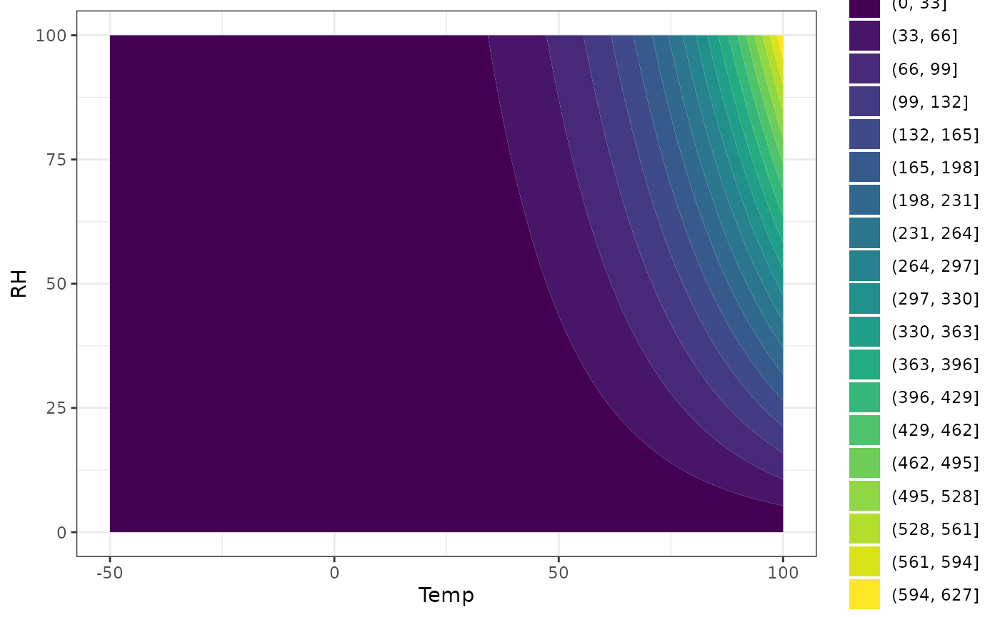
Water vapour saturation pressure calcPws
- Saturation vapor pressure calculation
- Actual water vapor pressure determination
TRHgrid |>
mutate(Pws = calcPws(Temp)) |>
ggplot(aes(Temp, RH, z = Pws)) +
geom_contour_filled(bins = 20) +
theme_minimal()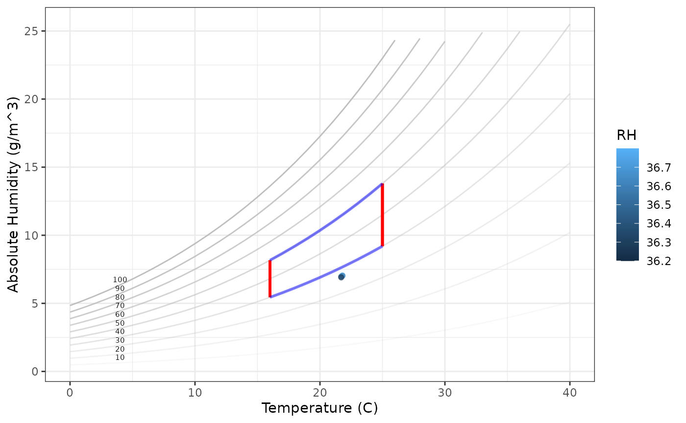
Water vapour pressure calcPw
TRHgrid |>
mutate(Pw = calcPw(Temp, RH)) |>
ggplot(aes(Temp, RH, z = Pw)) +
geom_contour_filled(bins = 20) +
theme_minimal()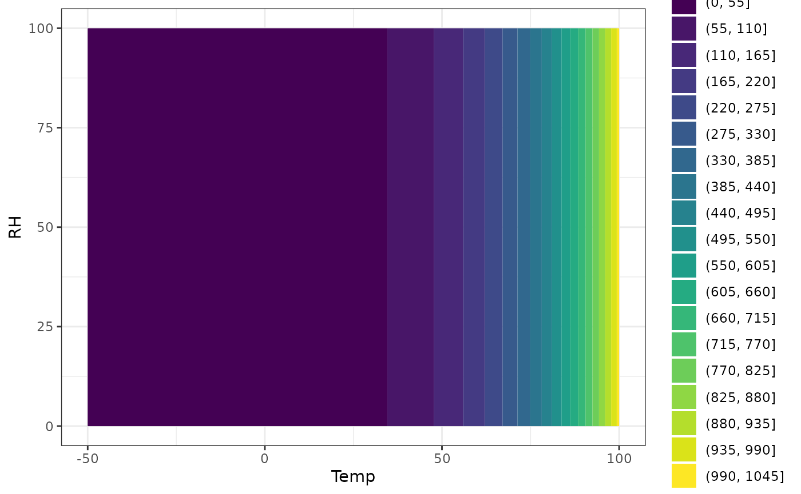
Mixing ratio calcMR
TRHgrid |>
mutate(MR = calcMR(Temp, RH)) |>
ggplot(aes(Temp, RH, z = MR)) +
geom_contour_filled(bins = 20) +
theme_minimal()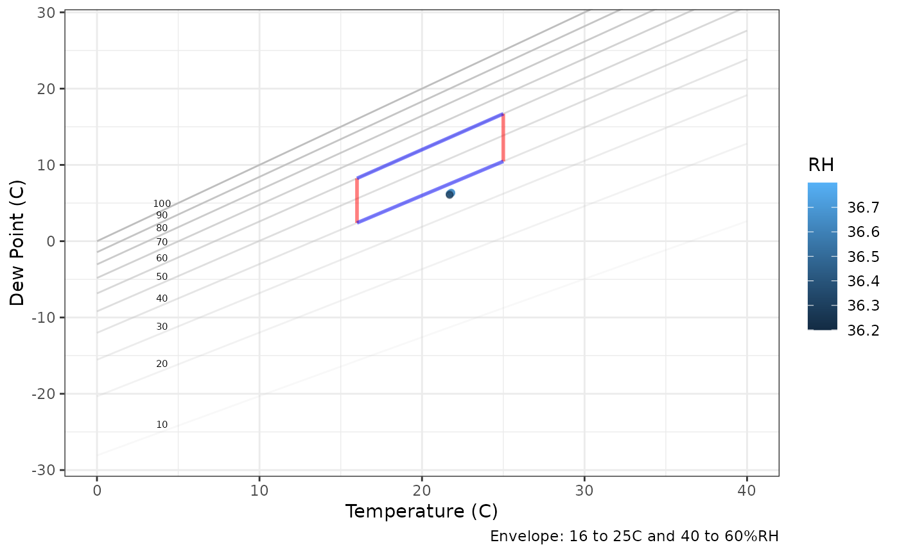
TRHgrid |>
mutate(MR_log10 = calcMR(Temp, RH) |> log10()) |>
ggplot(aes(Temp, RH, z = MR_log10)) +
geom_contour_filled(bins = 20) +
theme_minimal()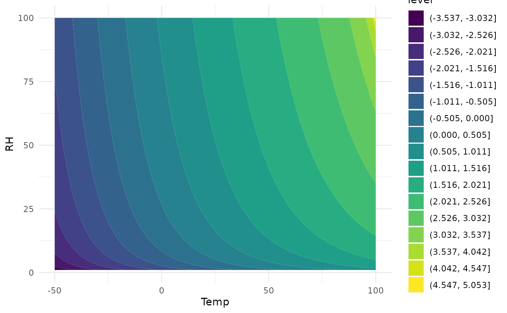
Enthalpy calcEnthalpy
TRHgrid |>
mutate(Enthalpy = calcEnthalpy(Temp, RH)) |>
ggplot(aes(Temp, RH, z = Enthalpy)) +
geom_contour_filled(bins = 20) +
theme_minimal()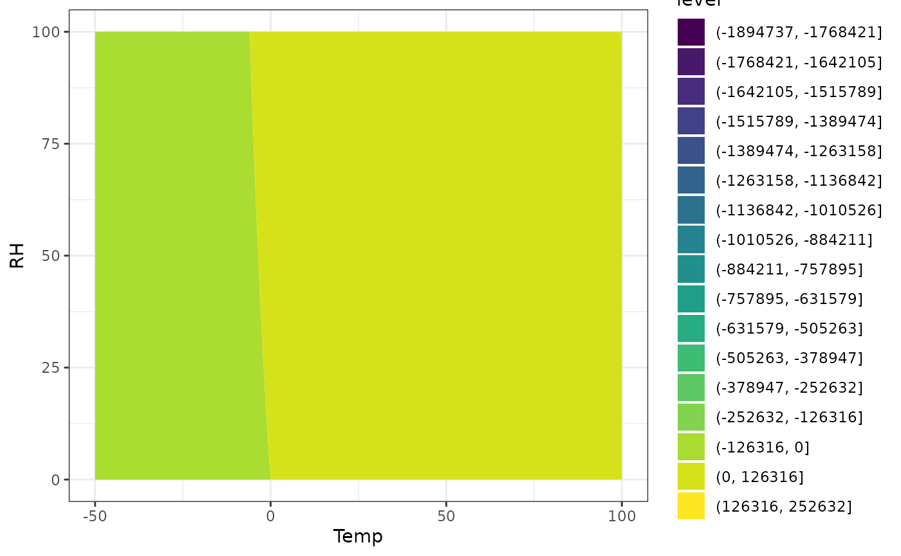
TRHgrid |>
mutate(Enthalpy_log10 = calcEnthalpy(Temp, RH) |> log10()) |>
ggplot(aes(Temp, RH, z = Enthalpy_log10)) +
geom_contour_filled(bins = 20) +
theme_minimal()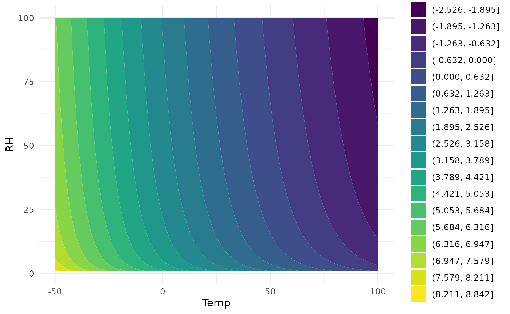